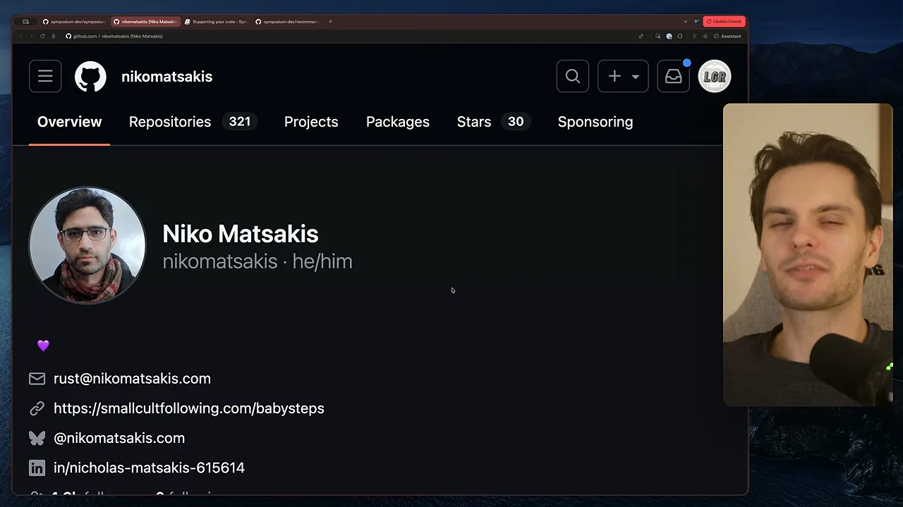
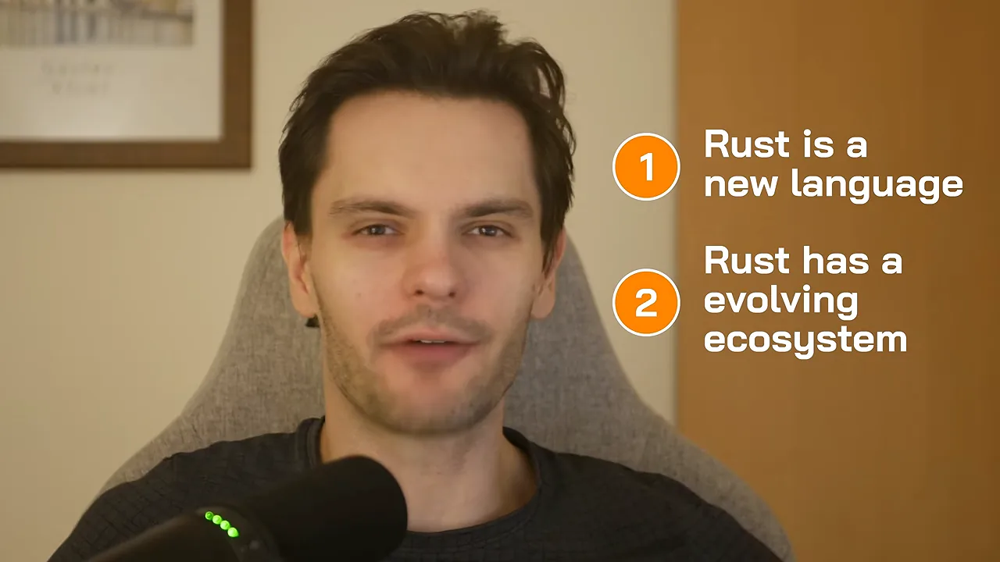
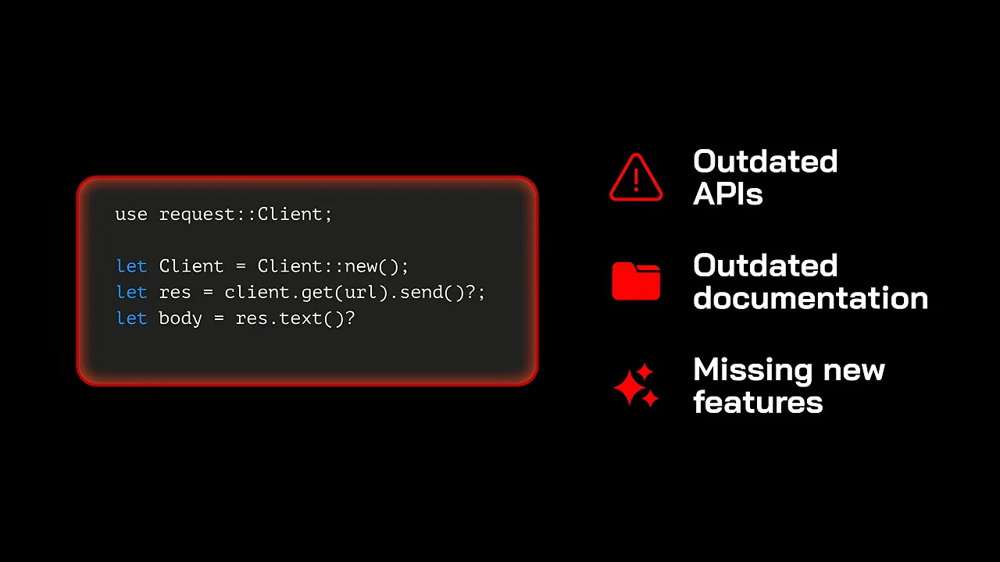
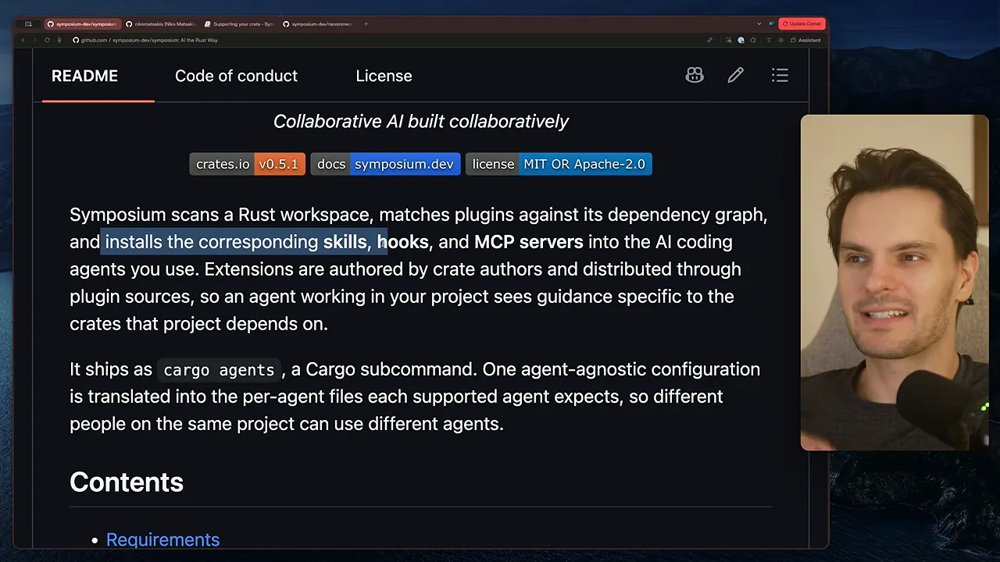
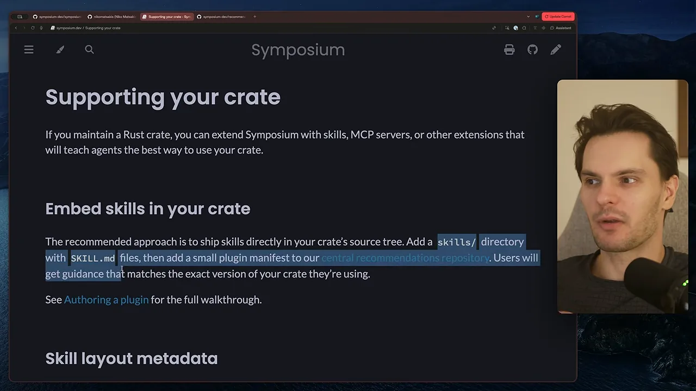
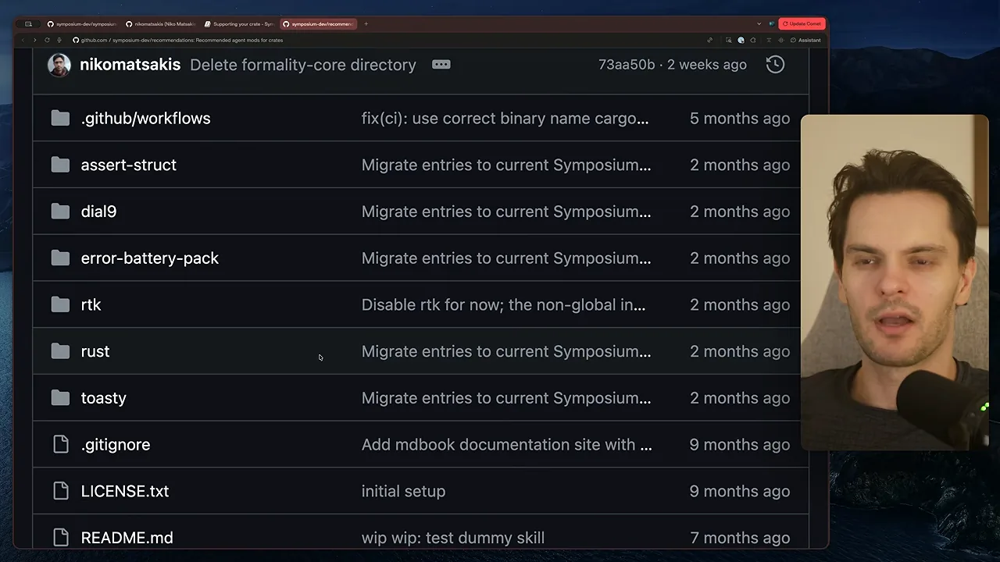
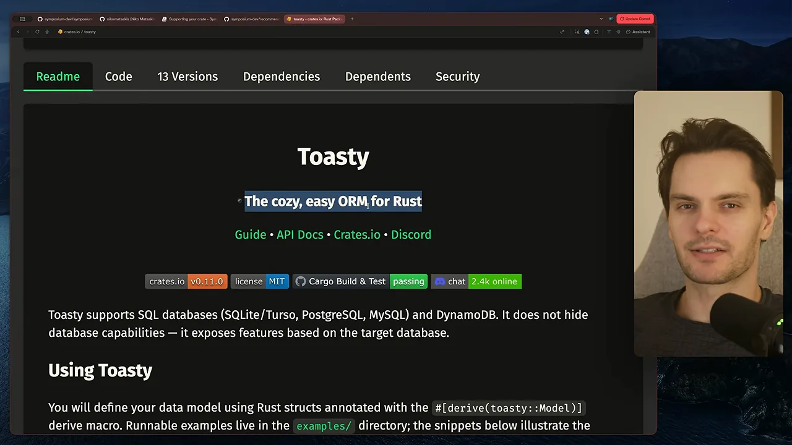
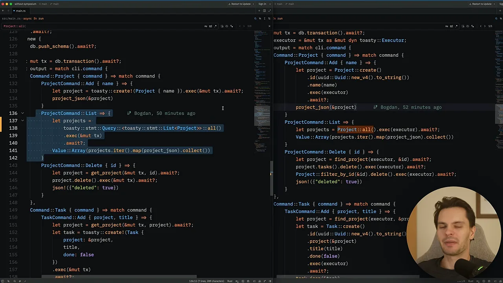
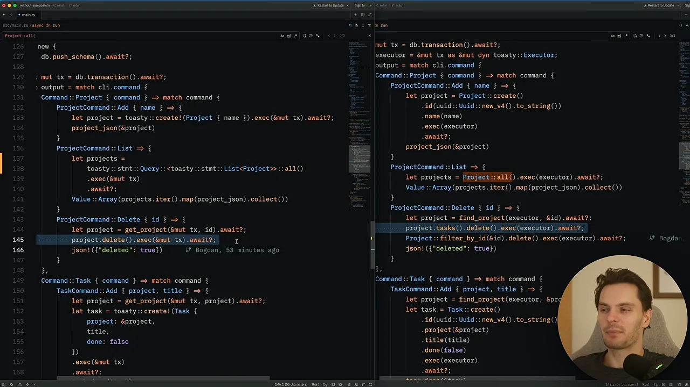
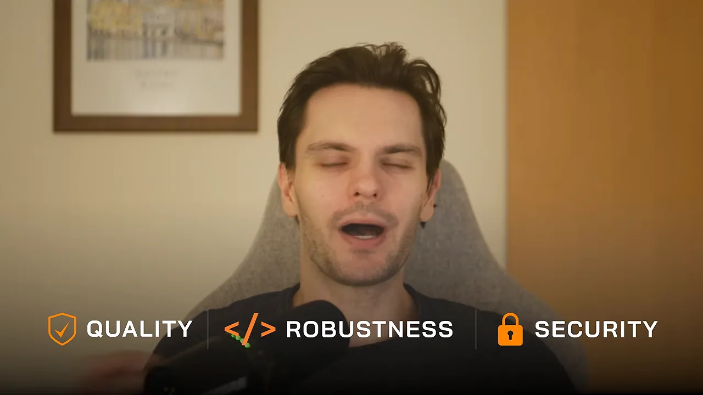

에이전트가 Rust에서 헤매는 두 가지 이유
Symposium은 Rust 언어의 주요 설계자이자 메인테이너인 Niko Matsakis가 만든 프로젝트예요. 화면에 뜬 GitHub 프로필이 그의 계정 nikomatsakis예요.

출발점은 에이전트에게 Rust를 맡길 때 생기는 문제 두 가지예요. 화면 오른쪽에 번호를 붙여 정리돼 있어요. 1번은 Rust가 새 언어라는 점, 2번은 생태계가 계속 바뀐다는 점이에요.

학습 데이터가 적어요
Rust는 C나 C++보다 역사가 짧아서 모델이 배운 Rust 코드가 상대적으로 적어요. 그래서 에이전트가 쓴 코드는 돌아가더라도 관용적인 코드가 아닐 때가 많아요. 다른 언어 습관을 Rust 문법으로 옮겨 적은 듯한 코드가 나오는 거예요.
크레이트가 빨리 바뀌어요
두 번째 문제가 더 실무에 가까워요. 프로젝트에서 쓰는 크레이트도 대부분 새것이고 자주 업데이트돼요. 아래 슬라이드 왼쪽에는 HTTP(Hypertext Transfer Protocol) 요청을 보내는 짧은 코드가, 오른쪽에는 그 결과로 생기는 문제 세 가지가 있어요.

발표자는 에이전트가 아예 옛 버전 크레이트를 골라 쓰는 일도 직접 겪었다고 해요. 그래서 질문을 이렇게 정리해요. 관용적이고, 최신 라이브러리를 쓰고, 팀이 정한 패턴과 관례를 따르는 코드를 LLM(Large Language Model)이 쓰게 하려면 어떻게 해야 할까요? 여기에 답하려는 게 Symposium이에요.
Symposium이 하는 일
Symposium의 GitHub README 첫 문단이 이 도구를 한 문장으로 설명해요. 파란색으로 강조된 부분이 핵심이에요. 프로젝트에 맞는 skills, hooks, MCP servers를 에이전트에 설치한다는 거예요.

흐름을 그림으로 옮기면 이래요. 왼쪽은 크레이트 작성자가 하는 일, 오른쪽은 그 크레이트를 쓰는 개발자 쪽에서 일어나는 일이에요. 두 줄은 Symposium에서 만나요.
크레이트 작성자가 할 일
공식 문서의 'Supporting your crate' 페이지가 방법을 설명해요. 강조된 문장대로, 크레이트 소스 안에 skills/ 폴더를 만들고 SKILL.md 파일을 넣어요. 그다음 recommendations 저장소에 작은 플러그인 매니페스트를 올려요. 필요하면 Cargo.toml에 메타데이터를 붙여 스킬 폴더 위치 같은 걸 바꿀 수 있어요.

이미 Symposium을 지원하는 크레이트는 recommendations 저장소에서 볼 수 있어요. 폴더 이름 하나가 크레이트 하나예요. 화면에는 assert-struct, dial9, error-battery-pack, rtk, rust, toasty가 보여요.

Toasty로 해 본 비교
recommendations 목록에 있던 Toasty는 Rust용 ORM(Object-Relational Mapping)이에요. 발표자는 Toasty를 한 번도 써 본 적이 없어서, Symposium이 있을 때와 없을 때를 비교하기 좋다고 봤어요. 화면은 Toasty의 README로, 부제가 'The cozy, easy ORM for Rust'예요.

실험 방법은 단순해요. Codex 에이전트 두 개에게 똑같은 프롬프트로 같은 작업 관리 프로젝트를 만들게 했어요. 한쪽은 Symposium 없이, 다른 쪽은 Symposium을 켜고요. 완성된 두 프로그램은 동작이 같았지만 코드 모양이 달랐어요.
목록 조회: Symposium 쪽이 깔끔했어요
아래 화면 왼쪽 창이 Symposium 없이 만든 코드(창 제목 without-symposium), 오른쪽이 Symposium을 켠 코드예요. 왼쪽에 강조된 ProjectCommand::List 블록은 toasty::stmt::Query::<toasty::stmt::List<Project>>::all()처럼 쿼리 객체를 만들고 반환 타입까지 직접 적어요. 오른쪽은 주황색으로 표시된 Project::all() 한 번으로 끝나요.

삭제: 오히려 Symposium 없는 쪽이 나았어요
그런데 반대 사례도 있었어요. 같은 화면의 ProjectCommand::Delete 블록을 보면, 오른쪽(Symposium)은 강조된 project.tasks().delete()로 그 프로젝트의 작업을 먼저 다 지우고, 다음 줄에서 프로젝트를 지워요. 왼쪽은 강조된 project.delete() 한 줄이 전부예요.

발표자 설명으로는, 왼쪽 코드는 Toasty의 캐스케이드 삭제를 써서 프로젝트에 딸린 작업까지 자동으로 지워요. 그러니 이 부분은 지침 없이 만든 쪽이 더 관용적인 코드였던 셈이에요.
| 명령 | Symposium 없음 | Symposium 있음 | 더 나은 쪽 |
|---|---|---|---|
| 프로젝트 목록 | 쿼리 객체에 all을 부르고 타입을 직접 적음 | Project::all() 바로 호출 | Symposium 있음 |
| 프로젝트 삭제 | project.delete() 한 줄, 하위 작업은 캐스케이드로 삭제 | 작업을 먼저 지운 뒤 프로젝트 삭제 | Symposium 없음 |
그래서 발표자는 짧은 실험 결과를 '맞을 때도 있고 빗나갈 때도 있다'고 정리해요. 그래도 아이디어 자체는 흥미롭고 Rust 개발에 도움이 될 수 있다고 봐요.
도구보다 중요한 것
실험 뒤에 발표자는 도구 이야기를 넓혀요. 자기와 동료들이 겪어 보니, AI 도구와 프레임워크는 어떤 개발자에게는 잘 맞고 다른 개발자에게는 잘 안 맞았대요. 아는 개발자 거의 모두가 자기 스타일에 맞춘 도구, 프레임워크, 하네스, 워크플로 조합을 따로 갖고 있다고 해요.
발표자도 다른 사람이 AI를 쓰는 방식을 보며 많이 배우지만, 결국 자기 쓰임새에 맞게 고쳐 써요. Symposium도 그렇게 써 보고 판단할 도구 중 하나라는 거예요.
결국 지켜야 할 세 가지
그가 가장 중요하게 꼽는 건 AI 도구를 쓰면서도 소프트웨어 품질을 높게 지키는 일이에요. 화면 아래에 그 세 가지가 아이콘과 함께 떠요. 품질(Quality), 견고함(Robustness), 보안(Security)이에요.

발표자는 시스템 소프트웨어를 만든다면 이게 더 중요하다고 강조해요. 에이전트가 쓴 코드를 그대로 믿기보다, 직접 읽고 판단할 수 있어야 한다는 뜻이에요.